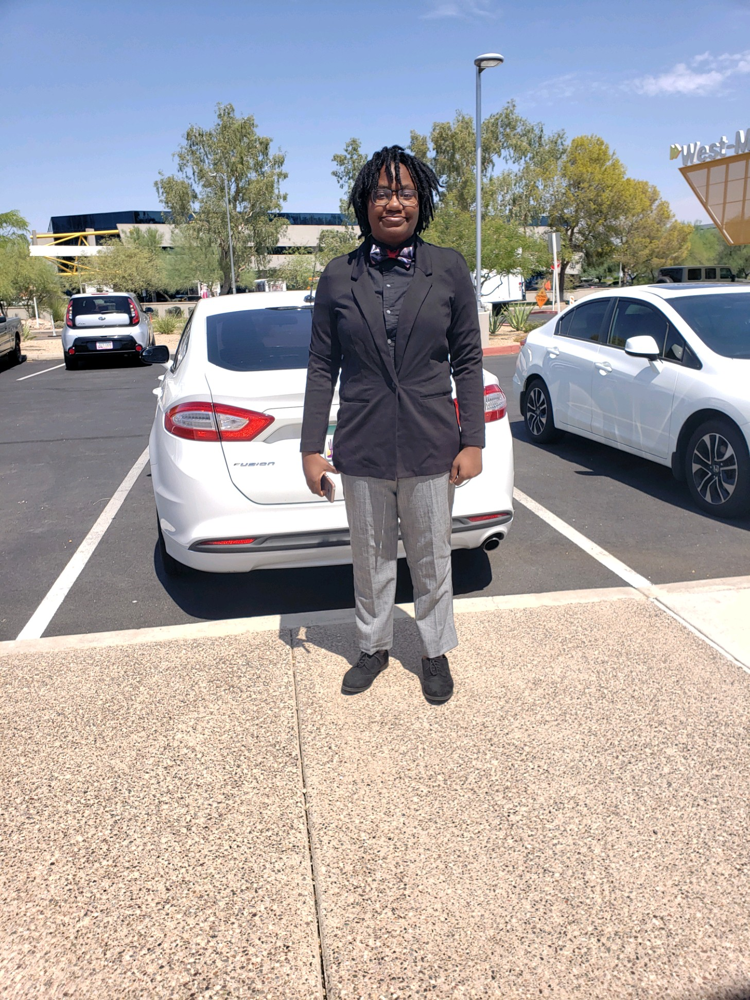

President
Hailey Moya
The President is responsible for many different aspects of the FBLA club, there is no specific job being President. Some of the things Hailey does are: Organizing fundraisers, Contacting Companies, Making Agendas for Meetings and keeping track of everything that's going on with FBLA.

Vice President
Veronica Tisdel
Veronica is a huge help to FBLA, she helps with fundraisers and everything that has to be done. She's a hardd worker and she puts in all her effort into her position. The Vice President is vital to keeping the club on track for success.

Treasurer
Gabriel Rubio
Gabriel is responsible for the money part of FBLA, there are so many fudraisers and events that happen and Gabriel tracks the money spent and the money brought in. This job takes a lot of effort, time and focus and Gabriel does an outstanding job.
Secretary
Cade Brown
Cade is responsible for a lot of the behind the scenes stuff. He documents the time stamps for our weekly meetings and keeps everything in the Google drive organized. This job takes a lot of patience and organizational skills which Cade has.

Parlimentarian
Evan French
Evan is responsible for making sure that all of the meetings stay on track and that all FBLA problems/issues are being accounted for. This job also takes a lot of patience and Evan does an amazing job every time.
VP Of Commitees
Ethan Tayloe
Ethan is responsible for everything, very similar to the President's job. He really helps out with fundraising ideas and organizing everything. He works so well with everyone and is commited to his task. He also helps with contacting places to set up fundraisers at.

VP Of Marketing and Social Media
Kaylee Oliver
Kaylee is outstanding at what she does. She has made sure that we have beautiful posters to hang around campus for our shoe drive. On top of that she has helped plenty with all of the fundraisers that we host at West-Mec.